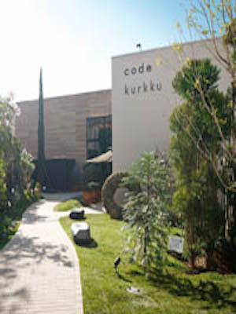

เกิดในปี 2011 ที่จะเดินจากสถานี Yoyogi ในขณะที่เดินเล่นที่แขวนอยู่ออกจากพื้นที่ประมาณ 300 ตารางเมตรสีเขียวชอุ่ม, คุณสามารถเพลิดเพลินกับการช้อปปิ้งและอาหารของคุณ เป็นความรับผิดชอบของแนวคิดการผลิตโดยโปรดิวเซอร์เพลงทาเคชิโคบายาชิ รวมทั้งเจ้าของร้านอาหารอิตาเลียนและพ่อครัวนาย Yasuhiro Sasajima ของ "Il Giottone" ข้อตกลงกับร้านขายของชำร้านกาแฟที่ทันสมัยและสิ่งอำนวยความสะดวกการพักผ่อนที่กระจัดกระจายอยู่บนเว็บไซต์ มันดูเหมือนว่าจะได้รับการปล่อยตัวจากความเครียดเพียงแค่ใส่ตัวเองในพื้นที่ที่อุดมไปด้วยพืชบุคลิกภาพในการผลิตที่ยอดเยี่ยมพื้นที่
